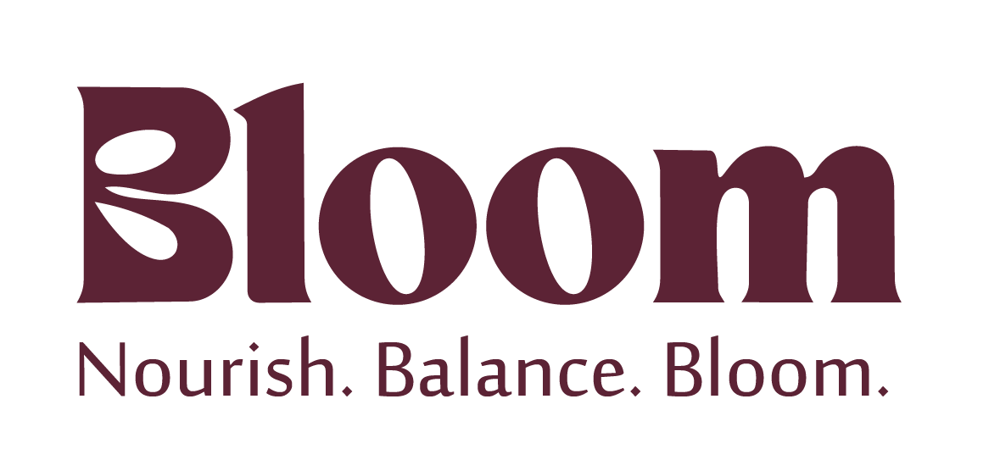
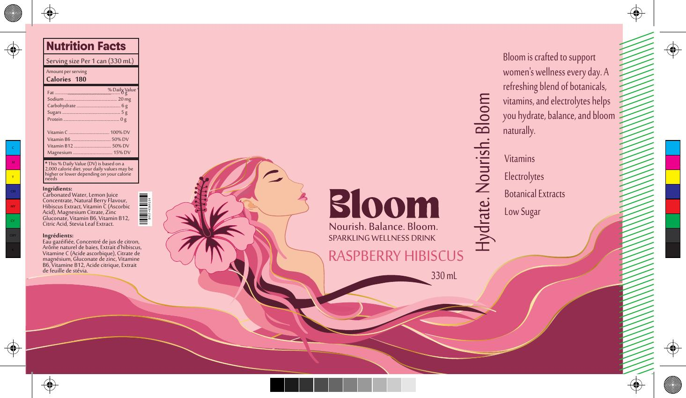
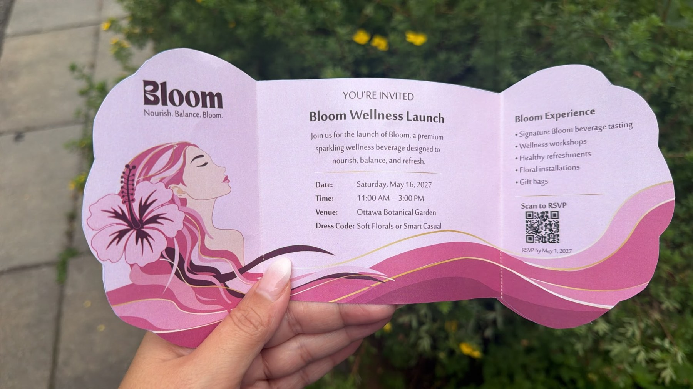

BLOOM
Nourish. Balance. Bloom.
Project Brief
BLOOM is a premium sparkling wellness beverage concept created for modern women with busy lifestyles. The project combines brand strategy, market research, packaging, event experience design, invitation development and print production into one cohesive identity.
The brand centres on balance, confidence and self-care, with a soft botanical visual language designed to feel premium, feminine and contemporary.

Research & Opportunity
The project began with market research into the growing functional beverage category. The opportunity was to create a premium sparkling drink that combines wellness, hydration and elevated visual branding while speaking directly to women.
Consumer Insight
The research identified demand for natural ingredients, low sugar, functional benefits, beautiful packaging and premium branding. BLOOM was positioned to bring those expectations together in a more wellness-focused and lifestyle-driven identity.
Target Audience
Women aged 18–40, including busy professionals, students, fitness enthusiasts and wellness-focused consumers with interests in self-care, healthy eating, yoga, skincare, fitness and premium products.
Brand System
The visual identity uses a soft pink and burgundy palette, botanical forms and flowing graphic lines to communicate movement, nourishment and balance. The logo and illustration system were developed to work across beverage packaging, invitations and event materials.


Launch Experience
The “Bloom Into Your Best Self” launch event extends the brand beyond packaging into an immersive wellness experience. The event concept includes beverage tasting, wellness workshops, healthy refreshments, floral installations and other lifestyle-focused touchpoints in a calm, botanical setting.
Event Direction
A modern botanical garden or greenhouse setting with natural light, flowers, greenery and soft neutral décor supports BLOOM’s values of balance, nourishment, confidence and self-care.
Invitation Concept
The invitation translates the brand into a tactile print piece using a custom floral die-cut shape, full-colour digital printing and matte cardstock. The fold-out structure creates a reveal as the invitation opens from brand message to event details and RSVP information.
Physical Prototype
A key part of the project was taking the invitation beyond a screen-based concept and producing a physical prototype. The final piece demonstrates how the identity, illustration, folds and information hierarchy work together in a real printed object.

Production & Technical Development
The production stage required print-ready files with dielines, bleed, colour separations and finishing considerations. This project strengthened my ability to move from concept and branding into commercial print preparation while preserving the premium visual direction.
Print Production
Full-colour digital printing, matte cardstock and a custom die-cut floral shape were developed for the invitation. The files also included separation views for die-cut and foil elements.
Packaging Production
The can artwork includes the complete wrap design, nutrition information, bilingual ingredients, product messaging and print-ready production elements.
Prototype Video
Outcome
BLOOM became a complete brand system rather than a single design piece. The final project connects consumer research, positioning, logo development, beverage packaging, event planning, invitation design and physical print production within one consistent visual identity. It demonstrates my ability to think across strategy, branding, packaging, experience design and production — from initial research through to a real, finished prototype.